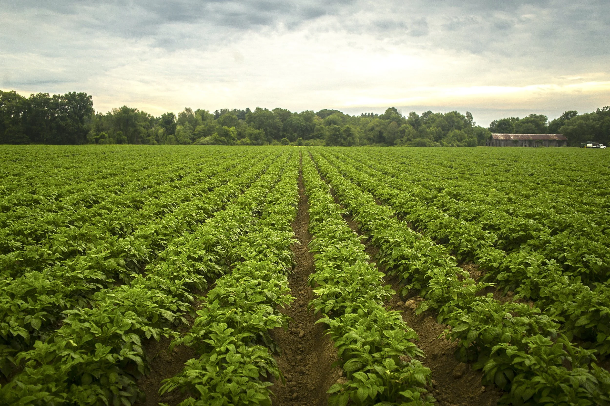

Lesotho Hub
Featured Businesses
Explore some of the top local farmers and suppliers across Lesotho.
Maseru Crop Farm
Specializing in high-quality maize, wheat, and potatoes. Maseru Crop Farm uses improved seed varieties, rotational cropping and simple soil tests to increase yields while reducing input costs. They work with local cooperatives to supply bulk orders and support smallholder producers with seed and training sessions.
Contact: maseru@cropfarm.ls • +266 5822 1111
Hours: Mon–Sat 07:00–16:00
Products:
- Maize - M50 per bag
- Wheat - M60 per bag
- Potatoes - M30 per sack
Leribe Dairy

Fresh and organic dairy products delivered daily. Leribe Dairy runs a small-scale pasteurisation line and partners with local milk collection points to ensure freshness and food safety. They offer training on animal health and feed management to partner farmers.
Contact: info@leribedairy.ls • +266 5833 2222
Hours: Mon–Fri 06:00–14:00
Products:
- Milk - M15 per liter
- Cheese - M80 per kg
- Yogurt - M20 per cup
Mohale’s Hoek Poultry

Trusted poultry farmers providing healthy chickens and eggs. Mohale’s Hoek Poultry follows vaccination schedules and biosecurity measures to maintain flock health. They accept both small retail orders and weekly bulk deliveries to markets.
Contact: sales@mohalespoultry.ls • +266 5844 3333
Hours: Tue–Sat 08:00–15:00
Products:
- Eggs - M50 per tray
- Chicken (live) - M85 each
- Chicken (processed) - M120 each
Butha-Buthe Organic Vegetables

Organic, pesticide-free vegetables grown locally. They use composting and mulching techniques to improve soil fertility and conserve moisture. Regular harvesting supplies local markets and restaurants with consistent quality.
Contact: hello@buthaveg.ls • +266 5855 4444
Hours: Mon–Sun 06:00–12:00
Products:
- Spinach - M20 per bunch
- Carrots - M25 per bag
- Tomatoes - M30 per crate